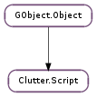

| static | new() |
| add_search_paths(paths) | |
| add_states(name, state) | |
| connect_signals(obj_or_map) | |
| connect_signals_full(func, *user_data) | |
| ensure_objects() | |
| get_object(name) | |
| get_objects(*objects) | |
| get_states(name) | |
| get_translation_domain() | |
| get_type_from_name(type_name) | |
| list_objects() | |
| load_from_data(data[, length]) | |
| load_from_file(filename) | |
| load_from_resource(resource_path) | |
| lookup_filename(filename) | |
| set_translation_domain(domain) | |
| unmerge_objects(merge_id) |
| Name | Type | Flags | Description |
|---|---|---|---|
| filename | str | r | The path of the currently parsed file |
| filename-set | bool | r | Whether the :filename property is set |
| translation-domain | str | r/w | The translation domain used to localize string |
None
| Name | Type | Access |
|---|---|---|
| parent_instance | GObject.Object | r |
Bases: GObject.Object
The Clutter.Script structure contains only private data and should be accessed using the provided API
| Returns: | the newly created Clutter.Script instance. Use GObject.Object.unref () when done. |
|---|---|
| Return type: | Clutter.Script |
Creates a new Clutter.Script instance. Clutter.Script can be used to load objects definitions for scenegraph elements, like actors, or behavioural elements, like behaviours and timelines. The definitions must be encoded using the JavaScript Object Notation (JSON) language.
| Parameters: | paths ([str]) – an array of strings containing different search paths |
|---|
Adds paths to the list of search paths held by script.
The search paths are used by Clutter.Script.lookup_filename (), which can be used to define search paths for the textures source file name or other custom, file-based properties.
| Parameters: |
|
|---|
Associates a Clutter.State to the Clutter.Script instance using the given name.
The Clutter.Script instance will use state to resolve target states when connecting signal handlers.
The Clutter.Script instance will take a reference on the Clutter.State passed to this function.
| Parameters: | user_data (object) – data to be passed to the signal handlers, or None |
|---|
Connects all the signals defined into a UI definition file to their handlers.
This method invokes Clutter.Script.connect_signals_full () internally and uses #GModule’s introspective features (by opening the current module’s scope) to look at the application’s symbol table.
Note that this function will not work if #GModule is not supported by the platform Clutter is running on.
| Parameters: |
|
|---|
Connects all the signals defined into a UI definition file to their handlers.
This function allows to control how the signal handlers are going to be connected to their respective signals. It is meant primarily for language bindings to allow resolving the function names using the native API, but it can also be used on platforms that do not support GModule.
Applications should use Clutter.Script.connect_signals ().
Ensure that every object defined inside script is correctly constructed. You should rarely need to use this function.
| Parameters: | name (str) – the name of the object to retrieve |
|---|---|
| Returns: | the named object, or None if no object with the given name was available |
| Return type: | GObject.Object |
Retrieves the object bound to name. This function does not increment the reference count of the returned object.
Retrieves a list of objects for the given names. After script, object names/return location pairs should be listed, with a None pointer ending the list, like:
GObject *my_label, *a_button, *main_timeline;
clutter_script_get_objects (script,
"my-label", &my_label,
"a-button", &a_button,
"main-timeline", &main_timeline,
NULL);
Note: This function does not increment the reference count of the returned objects.
| Parameters: | name (str or None) – the name of the Clutter.State, or None |
|---|---|
| Returns: | a pointer to the Clutter.State for the given name. The Clutter.State is owned by the Clutter.Script instance and it should not be unreferenced |
| Return type: | Clutter.State |
Retrieves the Clutter.State for the given state_name.
If name is None, this function will return the default Clutter.State instance.
| Returns: | the translation domain, if any is set, or None |
|---|---|
| Return type: | str |
Retrieves the translation domain set using Clutter.Script.set_translation_domain ().
| Parameters: | type_name (str) – name of the type to look up |
|---|---|
| Returns: | the type for the requested type name, or GObject.TYPE_INVALID if not corresponding type was found. |
| Return type: | GObject.GType |
Looks up a type by name, using the virtual function that Clutter.Script has for that purpose. This function should rarely be used.
| Returns: | a list of GObject.Object s, or None. The objects are owned by the Clutter.Script instance. Use GLib.List.free () on the returned list when done. |
|---|---|
| Return type: | [GObject.Object] |
Retrieves all the objects created by script.
Note: this function does not increment the reference count of the objects it returns.
| Parameters: | |
|---|---|
| Raises: | |
| Returns: | on error, zero is returned and error is set accordingly. On success, the merge id for the UI definitions is returned. You can use the merge id with Clutter.Script.unmerge_objects (). |
| Return type: |
Loads the definitions from data into script and merges with the currently loaded ones, if any.
| Parameters: | filename (str) – the full path to the definition file |
|---|---|
| Raises: | GLib.GError |
| Returns: | on error, zero is returned and error is set accordingly. On success, the merge id for the UI definitions is returned. You can use the merge id with Clutter.Script.unmerge_objects (). |
| Return type: | int |
Loads the definitions from filename into script and merges with the currently loaded ones, if any.
| Parameters: | resource_path (str) – the resource path of the file to parse |
|---|---|
| Raises: | GLib.GError |
| Returns: | on error, zero is returned and error is set accordingly. On success, the merge id for the UI definitions is returned. You can use the merge id with Clutter.Script.unmerge_objects (). |
| Return type: | int |
Loads the definitions from a resource file into script and merges with the currently loaded ones, if any.
| Parameters: | filename (str) – the name of the file to lookup |
|---|---|
| Returns: | the full path of filename or None if no path was found. |
| Return type: | str |
Looks up filename inside the search paths of script. If filename is found, its full path will be returned .